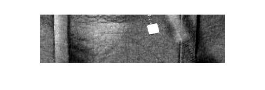

Nonlinear Oscillator
One of the coolest things that I like about physics is how accessible it can be with some fairly simple experiments. Here I've built a driven pendulum out of Legos. The drive arm is connected to the oscillator via a rubber band. The oscillator arm itself is damped through the friction of the LEGOs.
Despite its relative simplicity, we can observe some fairly complicated behavior, such as bifurcation (different behavior for the same conditions). For small displacements of the drive arm, the rubber band applies a linear force and the oscillator arm follows it exactly. But when the drive amplitude increases the rubber band provides a nonlinear force and more complicated behavior ensues. First, it goes through resonance, where the amplitude of the oscillator arm increases with the frequency of the drive arm as the frequency increases up to resonance. After this point, although the frequency of the drive arm continues to increase the oscillator arm amplitude does not. Additionally, it exhbiits bifurcation: At a frequency near resonance the amplitude of the driven oscillator can be different depending if you have reached that point by; increasing or decreasing the frequency.
You're welcome to download the full report. As well as the video analysis code, and a pair of Mathematica analysis files (one and two).
Here's a video of it running at a specific frequency.
Here are some processing images so you can see how it is done (thrsholding and following the green dot).
We isolate the region of interest (ROI).
Just the green channel of the ROI (I later learned that [RGB -0.5*R -0.5*B] is a better way of obtaining green color information).

Adjusting for full dynamic range.
A threshold allows us to isolate the marker.
Finally we have the location of the markers in all the frames.
Here's an example of the quality of the data you can extract from this simple setup.